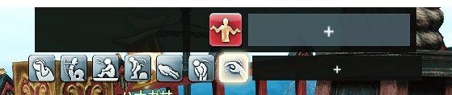

Glamaholic
插件原網址解放投影模板數量限制

QoL bar
插件原網址擴充你的快捷欄，自訂樣式可收合，任何可以做成巨集的功能都可以放進這個自訂窗口內
會日文的也可以參考這篇的教學
若有安裝畫面濾鏡建議先關閉濾鏡顯示，否則跨螢幕時容易閃退
Loading...

不只可以放表情，可以放文字、切換職業、喊話巨集等各種發揮創意玩法(?)
羊圈DC會有很多人分享他們的QoLbar
Loading...

快捷欄通用設定

會修改到的設定應該只有這些，如果需要更改數字欄位，可以滑鼠按住往左右拖曳。
▶第一張的"O"可以打開快捷欄設定
▶"H"可切換隱藏"R"顯示
▶編輯完畢後把Edit Mode取消勾選，就不會看到上方的＋號框框了
▶若勾選點擊互動（應該是點擊透過才對），則快捷欄無法使用下拉選單、無法互動
點選導入會導入剪貼簿的代碼，所以點擊導入之前先複製需要導入的代碼到剪貼簿。
Shortcut設定
Loading...

- Name－"::"後面的數字是icon編號，點右下角放大鏡可以打開icon資源庫，後面加"##"(顯示的名稱)滑鼠移入可顯示提示
- Command－類似寫巨集的地方，可以寫指令，右鍵可以添加遊戲內特殊符號
另外可以使用"//m巨集的編號"來快捷使用巨集，如果要使用角色共享巨集，需要+100，例如要使用共享MACRO#0，則需要輸入"//m100" - Mode－Command執行的方式（應該）
- 旁邊兩個頁籤－Category是下拉選單才有的設定，可以調整選單寬度(Width)、一行幾個(Column)、大小間距(Scale、Spacing)，下面的選項Hover=滑鼠移入時，可以設定點選打開或滑入打開/關閉，跟不要背景；Icon就是外觀微調
巨集指令(導入前建議勾選Settings底下兩個Allow開投的選項)
| # | 指令 | 行為 | 範例 |
|---|---|---|---|
| 1 | /gearset change | 切換職業 | /gearset change (裝備數字or職業名稱) /gearset change 占星術師 |
| 2 | /lookout | 表情指令 | 每個表情指令不一樣，打開EMOTES可以查看 |
| 3 | //i (物品名稱) | 使用物品 | //i エターナルリング 婚戒傳送 |
| 4 | 導入代碼 | 攻略マクロ集 | DC連結(需加入羊圈) |
| 5 | 導入代碼 | 切換職業 原作者是用套裝編號做切換，這個版本是改成用職業名切換，所以套裝名稱需要是日文職業名稱不可以設別名唷。 |
DC連結(需加入羊圈)
H4sIAAAAAAAACsVXXU8TQRT9K2TWx03d3dJu2UfDAw9GjMT4YHgoWNEXQmg1MYTE7kYkjUW+RESayodIaatEFCuC/Jhh2t1/4Z1dWobGmS4OapNuZvfcnTNz75l7706gK5knYylkoRRS0ZCBrInWE7hT0SgMsF3DzgfsLPXd7oVH6evIuntmlm6aWZYZT2i6omD7GDt72P4EQAZZeodX9Jii1Fdeez/mve0ZslEGbBiwqyOp5Hg6lekafpAcHUl1tZk87IcptYimwn8Qbm8hi96h4YExABJq9+Ckyl1kHBintwRcTVCGxdCoKyrUFc4SdirY3sR2GTuHHFKerdROu2ENTo5O50zzeBk8BNegwOoOsgztnDkdgwQiMRjcuIaszPijFAz7gpFg4QZd+Dx4ADulwA8hpKT1KErjzZFXXSS7AikFJl52QT7IOkiJ5N/Vl4vu2gKp8RjbTKQYwTOkuuU+fcbjaoIyLN1RRXH31vksLVBeMrohL5m4EUvAkntvDoRQCjX2D8YaPWrOYbi3qO9NRTn5mee4JECkjivM3yivCvMgi0txQdrFznorU/8+NZzhUpqF0JDjvECzTVBKs37O2PFzxpwgz543kdSvvGwhg/gyBD/XwisR9FsvFcm394IqxuBSSklA9GaLXjbnlkonBwe8GJ43kSqd0EW4NShLOVKd5SUgBv/vMYRzi+0qdjaw/d1vfy6QU2Cv5GWFLK3wI8niUucQIul+3exUHwOTy6mP0ATRtq0DY2ByOYzQA3iFzoyFizJehoL+ogp1vxeBXO03TK8CFYYqhjpNJt6Livd8TtjEtJn8cZAoIxQfd+e4MTvFp2NxKS6QYGPxM5ma43OxuAwXbUC9/FsytS9wI4NL7YsmjqMyhETQdzK41L4gcdRXt2k54XKxuNS+aOu5kW3UygJtMLgUF7QMXqHU+LIr3FqbiWyy6G+dafkzT7s4+6NfefZDfyrRndNv4Jm1+syyIKIMLuVlKI9kdd7N1QRKZXAprgTs6zAr2FQT/Hcp/x68o6Kkf33sX4fgs6cnqiI6hxYxzbiZiJlRyhH3fya8lT6d9D7MblDKNLXWNVWnCxk9ZZr0p0RGxIjokSia/AXf5ZOq0hEAAA==
|
| 6 | 導入代碼 | 挖寶按紐(須配合Globetrotter) | DC連結(需加入羊圈) |
| 7 | 導入代碼 | 標點視窗(標記需要手動更改指令) | DC連結(需加入羊圈) |
| 8 | 導入代碼 | 傳送按紐(須配合Teleporter) | DC連結(需加入羊圈) |
| 9 | 導入代碼 | 自用導覽列 | 總共有四個大目錄表情動作、常用問候巨集、插件呼叫（有安裝的才會有反應Daily Duty、MapLinker、Market Board、QoL bar、Simple Tweaks、Sonar、Visiblity、Waymark Preset Plugin、JobBars）、婚戒傳送
H4sIAAAAAAAACs1XXU/bVhj+K8jexSZlqb+d5K7dzS7Qvrq7iQuHWDSLsbPYgUUVFcemARLaVHx/FqoVlrSwlpY1rFD4MSe246v9hb0J2AmTStHOzSRHOp/P87wf57wn96nPrFJepVKUSsWoNEel7kcj0ItROjTaz+qe8xA65iCV+qm3wAwXpFJJmr5Y5VaXWh82YdyiUux1OySB4TjYtVfFdg2jbZgYholbmmHkjKIF3ey3sJeJMzH4DUH3ByrV6VHDd/MwkYgJQxOxj0GzEk17swA97829wui3PoJxZUwlRBeFEGykYBT1jJkl1SvKPfuL+gihQJ5nQ7i8ppQyqpIhBBSYEFBVTEst6GljnNBkLhFpNHKkEZH5EOyeomeMMbVACMhE6tLqcM7QSfVJIZypKXnCYCQiYzVFy94zSJMlyuaMYREGQmAiQ/NKVrfSmjKcI4WUr0AWVMJkFnqx7QKWVE0jzWaBSf7L7iLpGZYjlSMFxSpmrRIhYFKMJKqWopmEKS1FYTGtwo1P8NA1q76CkhGtFmB1pw1jcRka39yhUlahqELz64vWR6RxEisxNO0uV9qNQ7dZDzbKNylHLJfslKOXVff5ujc37S2tRd4awPYMth9htIIRlKpK8GwVo6lu9wyjtb9PEZErgZkH5rONdnWv9b7cR4sq/vIbbM9htNSl+r3LuU1IKEtJSaDpAC14B7P9bGsYnXd5NrC9ACTwfY4n5+H7gsxAke+U46nt9v6W3zzyz+d7rN/9iJGN7QpGYGUdozJGixgtd/17dmHugwdE7Iwg8iG7a78NJlGfzU4ZO/vY2fqkCEKfsyLDspGKs4Z3dBKdnoH26rS/uH2tBPIkk1ku5A8m192dw5C/NOC9Ocao2rXzE14gC0RChDQAfvhaxyeuvd+TcNG/yh9m+4en/5erRZa47sOyNt86eefOrMCT9wZXiyzJjEjTtwcHQ3t/1fJacSSrE13BHdhOYq/susfHXu1JUI6OVYasQjKiBLnqbr52N5fb9dVgbioEHlXyWlYnK+jw1oXrufX+ube64G2du85f3s5pdCRH04Q+EQH8e0NLK4UQ85ewR+RqGTzyas9frLvNXfdhMwS3xlUlRxxH+PvkTb7wZxt+teE/+jO6GgydWLgI2MH6YXul5j9uuH+8izw9liV7AbDwcASf7BxBonj1teDkaQQ9rpRGlUKOVDkcmjZqersHwXStfbAZwv9spCGeJvmlcBcmLs893A9i/77/dD2IgiiBZm8G/nROXy01t7LwiKhj+xw7p9ipYOcldl5g5y22X9/YjgyMxqjOyJcwyzAixyR4npcud2mhSrMjHKwxe8bolyZMxKgxkMPFuTgb56mJfwAlSZN3/w8AAA==
|